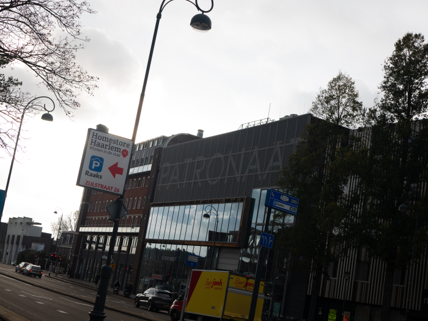
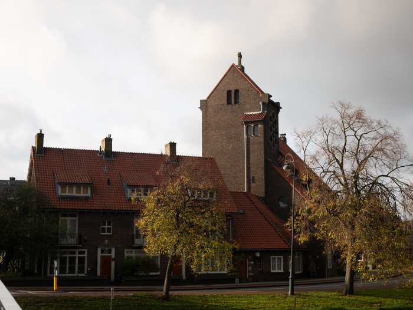

Over Zijlwegkwartier
Het Zijlwegkwartier ligt In het westen van de stad, langs de
spoorbaan Haarlem-Leiden. Door de wijk loopt de Zijlweg. Het is een
oude wijk, zestig procent van de huizen is 19e eeuws. De wijk is
dichtbebouwd, met voornamelijk eengezinswoningen en boven- en benedenwoningen.
Het merendeel is koop. Ruim 8.000 Haarlemmers bevolken het Zijlwegkwartier.
Het Patronaat

Het Patronaat is een muziektempel en is de trekpleister van het Zijlwegkwartier.
Het Patronaat is lopend en met de auto te bereiken. Het Patronaat is een Poppodium en
staat al jaren in de top tien van de kernpodia van Nederland. Er wordt gezocht
naar progressieve, publieksvriendelijke en vooruitstrevende mixen die daar worden gedraaid.
Het podium bestaat van 1984 tot het heden. Ze blijven groeien en kennen per jaar
meer dan 500 activiteiten. Ze hebben ook meer dan 130.000 bezoekers per jaar.

H.H. Anna en Mariakathedraal
Daarnaast heb je de H.H. Anna en Mariakathedraal van het oudkatholieke bisdom.
Deze Kathedraal is de hoofdkerk van het bisdom in Haarlem. Officieel is dit
de Oud-Katholieke kathedraal, als tweede in Nederland, naast de St.
Gertrudiskathedraal in Utrecht. Ook in gebruik als Anglicaanse Kerk, die
hier op zondagmiddag aparte vieringen houdt. Enkele keren per jaar vinden
gezamenlijke vieringen plaats, met de Oud-Katholieke Kerk. Ook in Arnhem maakt de
Anglicaanse Kerk gebruik van het Oud-Katholieke kerkgebouw.
Gevestigde bedrijven
In het Zijlwegkwartier zijn ook een aantal bedrijven gevestigd.
De grootste is Fjord Benelux. Voor de rest zijn Liesbeth Tijms – Kunstbloemen
en interieur, BLM Tech, byK., DaanDoet, V.v.E. Brouwersplein zwart en rood te
Haarlem, Your expat agency, SailVideoSystem, Studio Eloy, Grace Investments BV,
Phase X1 BV, Boulder cafe BV, Delta van Melle, Van Horen Gynaecologie, Dille Thomas,
Hartopener, Majoortjes BV, Paulussen juridische advies, Zylhuis, Stichting one of
US-Nederland voor wetenschap, cultuur en leven, Herink interm en advies en Gesnapt!
Remedial Teaching daar gevestigd
Gevestigde winkels
Voor mensen die van bloemen houden is er een Jasmijn en een Freshsilk gevestigd
waar je bloemen kunt kopen. Voor mensen die veel van fotograferen houden
is er een camerawinkel genaamd Photobrandstore. Bij Seref Rijwielhandel kan
je fietsen huren of je fiets laten repareren. Koot’s Pianohandel B.V. is een
winkel dat al jaren bestaat en daar kan je je piano restaureren of kopen.